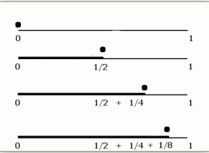
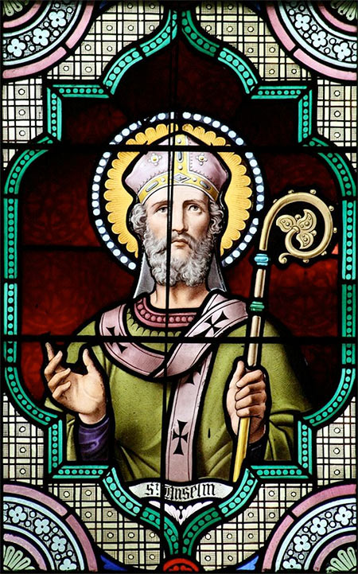
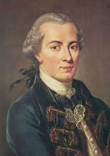
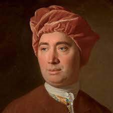
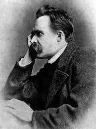

In the beginning, the story was told the real facts with fanciful narration, based on myths and inexplicable phenomena. From VI BC, some people wanted to know what was happening in real This movement, Logos, was dedicated to seeking and researching answers to natural phenomena from natural or observable facts.
Philosophy comes from the Greek root Philo- which means "love" and -Sophos, or "wisdom." When someone studies philosophy they want to understand how and why people do certain things and how to live a good life. In others words, they want to know the meaning of life.
People who study philosophy are called philosophers. Because philosophy is the study of everything, it has many paths like science (rationalism), metaphysics (justice, faith, ...), prism (experience), existence, etc.
They were recognized in antiquity as the first philosophers and scientists of the Western tradition. The majority were born before Socrates. Your questions studied about the origin and nature of the physical world have brought them to call themselves cosmologists or naturalists. The Presocratics stated that there was only one lasting material issue: the origin of all things and their continuing nature.
They started asking questions like where did everything come from, why is it there there is so much variety and how can nature be described mathematically?
The first of western philosopher is Thales of Miletus.
Heraclitus was a philosopher who spoke of the energy of the universe. Having said that everything changes and nature is in constant motion, the reason by which everything exists is by the struggle of forces, the cosmos. not there there is order without disorder and there is no balance without chaos.
No man ever steps in the same river twice, for it's not the same river and he's
not the same man.
They were the opposite of Heraclitus, he believed that the universe is immutable, eternal and uncreated.
“We can speak and think only of what exists. And what exists is uncreated and imperishable for it is whole and unchanging and complete. It was not or nor shall be different since it is now, all at once, one and continuous.”
 Demonstrated the theory of movement does not exist with mathematics, a rather simple, eloquent, but still confounding series of arguments. Essentially, Zeno contends that before an object can reach its target, it must first achieve the halfway mark. After that, the object is obliged to traverse to the median of the remaining distance. Continuing, it must then reach the next halfway mark again and again and again, infinitely.
Starting with Socrates and the upcoming philosophers focused on human affairs, more on morals behaviour o ethics and having a good life. If having a good life means being wise, kind and having good morals which later were considered as foundation for Christianity.
"Reality is rational, if you act and think according to reason, you are doing it virtuously. Whoever acts badly, does so out of ignorance."
Socrates is considered by many to be the founding father of Western philosophy—as well as one of the most enigmatic figures of ancient history.
The concept of God is the creator and sustainer of the universe and is unlimited in knowledge (omniscience), power (omnipotence), extension (omnipresence), and moral perfection. Although regarded as sexless, God has traditionally been referred to by the masculine pronoun.
 "If God is something which is greater than you can imagine it to be, and for something to exist in reality means that it is greater than you just imagining it, then god must exist"
For I do not seek to understand in order to believe, but i believe in order
to understand. For I believe this: unless i believe, I will not understand.
God is that, the greater than which cannot be conceived.
 "The wish to talk to God is absurd. We can not talk to one we cannot comprehend; we can only believe in Him."
"God, freedom, and immortality are untenable in the light of pure reason."
The sum total of all possible knowledge of God is not possible for a human
being, not even through a true revelation. But it is one of the worthiest
inquiries to see how far our reason can go in the knowledge of God.
Atheism, in the broadest sense, is an absence of belief in the existence of deities. Less broadly, atheism is a rejection of the belief that any deities exist. In an even narrower sense, atheism is specifically the position that there are no deities. Atheism is contrasted with theism, the concept that belief in the existence of deities. Normally, the movement started in the 18th century after the French revolution of 1789.
 "If God is omnipotent, omniscient and wholly good, whence evil? If God wills to prevent evil but cannot, then He is not omnipotent. If He can prevent evil but does not, then he is not good. In either case, he is not God."
No human testimony can have such force to prove a miracle, and make it a
just foundation for any such system of religion.
Examine the religious principales which have, in fact, prevailed in the
world, and you will scarcely be persuaded that they are anything but sick
men's dreams.
 "Christianity was from the beginning, essentially and fundamentally, life's nausea and disgust with life, merely concealed behind, masked by, dressed up as, faith in "another" or "better" life. Hatred of "the world," condemnations of the passions, fear of the beauty and sensuality, a beyond invented the better to slander this life ..."
I cannot believe in a god who wants to be praised all the time.
Faith means not wanting to know what is true.
There is not enough love and goodness in the world for us to be permitted to
give any of it away to imaginary beings.
God is dead. God remains dead. And we have killed him. How shall we comfort ourselves,
the murderers of all murderers? What was holiest and mightiest of all that the world
has yet owned has bled to death under our knives: who will wipe this blood off us?
What water is there for us to clean ourselves? What festivals of atonement, what
sacred games shall we have to invent? Is not the greatness of this deed too great for
us? Must we not become gods simply to appear worthy of it?
Philosophy addresses two different aspects of the topic of reality: the nature of reality itself and the relationship between the mind (as well as language and culture) and reality as it is form solid.
"Reality is divided between the sensible and the intelligible (rational) world. The sensible world is chaotic, in constant motion and there is no knowledge. Instead, the rational world is static, equilibrium, rational and real."
"Reality cannot be divided, but they depend on each other, the sensible world is to have experience and the intelligible world from experience comes to reason, and knowledge."
A movement focused on profit. Utilitarianism is based on questions that arise about how one should act, in a moral sense that prescribes actions that can maximize the happiness and well-being of all affected individuals.
"If all mankind minus one were of one opinion, mankind would be no more justified in silencing that one person than he, if he had the power, would be justified in silencing mankind."